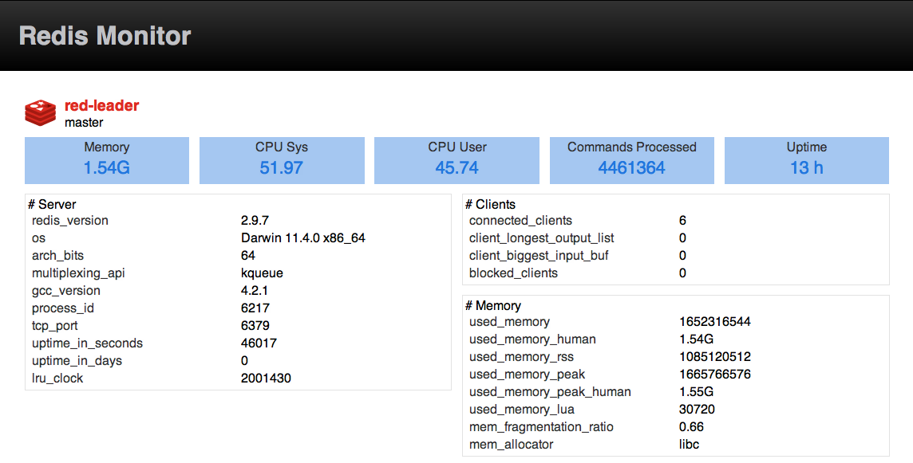
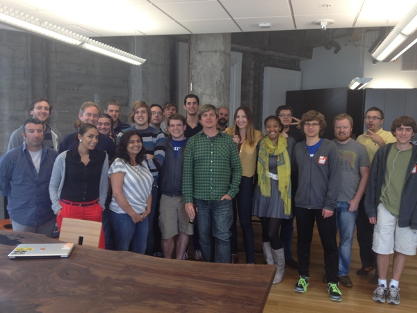
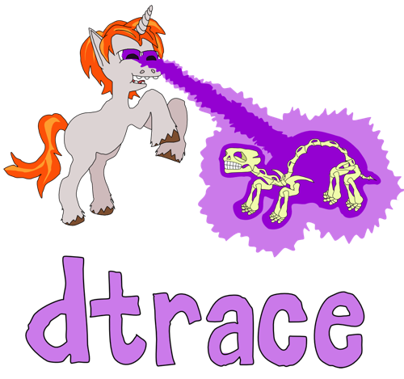

Observability
for Node.js & Realtime Software

@dshaw
- #bigdata
- #chinamarket
- #observability

@enterprisestack
Precondition:
Observability is hard
...especially at scale.
dshaw
Voxer
The Node Firm
NodeUp

Define: Observability
Observability is a measure for how well internal states of a system can be inferred by knowledge of its external outputs.
Source: WikipediaCaveat Emptor
I'm going to abuse the term a bit.
Realtime App Priorities
- Scalability
- Observability
Scale is why we build realtime apps. Observability is how we keep things sane at scale.
Observability: Why?
Sometimes things get out of control.

You'll want to know what's going on.
Observers Tools
- logging
- health/status endpoints
- REPL
- monitoring
- log aggregation
- metrics
- DTrace
Discrete Observability
Logging
Logging is your friend.
- Don't be afraid of logging.
- Not logging, or severely limiting logging, is a ridiculous premature optimization.
Logging
Yes, you can go too far.
- Be careful with expensive to serialize objects.
- Noise reduces observability.
Health/Status Endpoints
Create a status or health endpoint.
- process.memory
- process.uptime
- process.versions
- process.pid
- connections
- proc: cpu microtime
/health
app.get('/health', function(req, res){
res.send({
pid: process.pid,
memory: process.memoryUsage(),
uptime: process.uptime(),
connections: server.connections
})
})
REPL
var net = require('net'),
, repl = require('repl');
net.createServer(function (socket) {
repl.start({
prompt: 'repl> ',
input: socket,
output: socket
}).on('exit', function() {
socket.end();
})
}).listen('/tmp/node-repl.sock');
REPL: no excuses
Use Replify.
npm install replify
var replify = require('replify')
, io = require('socket.io').listen(8888)
, app = io
io.on('connection', function (socket) {
//...
})
replify('socket.io', app)
Access your replify REPL
netcat
$ nc -U /tmp/repl/socket.io.sock
socat
$ socat READLINE /tmp/repl/socket.io.sock
Let's make that easier too!
repl-client (rc)
npm install -g repl-client
$ rc /tmp/repl/socket.io.sock
repl-client (rc)
- history*
- tab completion
(* also possible with socat)
Monitoring
- Nagios
- reconnoiter
- Circonus
- Munin
Monitoring #RedisConf Edition
- Reddish
- RedisLive
- Redis Monitor
Redis Monitor
Monitor a single Redis or a cluster of Redis servers.
Now visualize what's going on on those servers.

Redis: Use MONITOR for drop-in observation
Monitoring with Redis MONITOR is bad.
The MONITOR command is good and useful for debugging, but not monitoring.
Aggregate
and Lossy
Observability
Log Aggregation
- Loggly
- Graylog2
- Splunk
- Winston/Winstond
- files + grep
Metrics
- Etsy statsd
- Something new soon from the Voxer Summer of Node.js Interns...
Summer of Node.js <3 Metrics

@sentientwaffle
llquantize
Metrics (can) tell a story
- Visualization
- Comparative Analysis
- System Health
- Event Triggers
Good Metrics
Evolve from the foundations provided by other observability measures.
Dtrace

Observability means optimizing software for humans.
Neverending Story
Thank you!
@dshaw
More at: github.com/dshaw